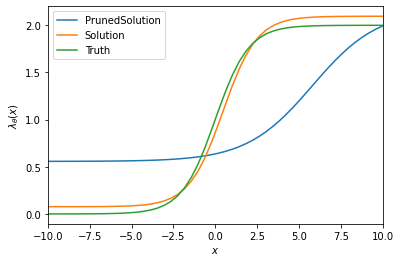
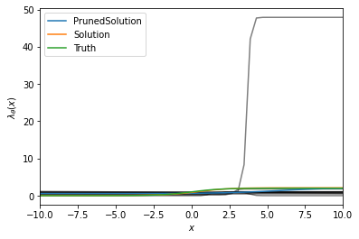

Demo of gcdyn.mutators.DiscreteMutator#
from gcdyn import bdms, model, mutators
from numpy import pi, sqrt
import numpy as np
import matplotlib.pyplot as plt
from ete3.coretype.tree import TreeError
Simulation#
θ = [2, 1, 0, 0]
state_space = [1.0, 2.7, sqrt(2), pi]
transition_matrix = [
[0, 0, 0, 1],
[0.25, 0.25, 0.25, 0.25],
[0.8, 0.1, 0.05, 0.05],
[0.5, 0.25, 0.25, 0]
]
tree = bdms.TreeNode(x = 2.7)
tree.evolve(
t = 5,
birth_rate = bdms.SigmoidResponse(θ[1], θ[2], θ[0], θ[3]),
death_rate = bdms.ConstantResponse(1),
mutation_rate = bdms.ConstantResponse(1),
mutator = mutators.DiscreteMutator(state_space, transition_matrix),
min_survivors = 20,
seed = 0
)
tree.sample_survivors(p = 0.5, seed = 0)
print(tree.x)
print([c.x for c in tree.children[0].children])
2.7
[2.7, 1.4142135623730951]
for node in tree.traverse():
for child in node.children:
if child.event != "mutation":
continue
if node.x == 1.0:
assert child.x == pi
if node.x == pi:
assert child.x != pi
Inference#
def plot_curve(*θ_values, range = (-10, 10), **named_θ_values):
x_array = np.linspace(*range)
λ = lambda θ: model.Model.λ(None, x_array, θ)
plt.figure()
for θ in θ_values:
plt.plot(x_array, λ(θ), color = "black", alpha = 0.5)
for name, θ in named_θ_values.items():
plt.plot(x_array, λ(θ), label = name)
plt.xlabel(r"$x$")
plt.ylabel(r"$\lambda_\theta(x)$")
plt.xlim(*range)
if named_θ_values:
plt.legend()
plt.show()
def evolve_trees(num_trees, init_x = 0, **evolve_kwargs):
trees = []
seed = evolve_kwargs.pop("seed", None)
for _ in range(num_trees):
while True:
try:
tree = bdms.TreeNode(x = init_x)
tree.evolve(seed = seed, **evolve_kwargs)
trees.append(tree)
break
except TreeError: # not enough survivors
seed = seed + 1 if seed is not None else None
seed = seed + 1 if seed is not None else None
print("Average of", sum(len(list(tree.traverse())) for tree in trees) / len(trees), "nodes per tree, over", len(trees), "trees")
return trees
def prune_trees(trees):
copied_trees = [tree.copy() for tree in trees]
for tree in copied_trees:
tree.prune()
return copied_trees
Generate some trees, and obtain pruned copies
trees = evolve_trees(10,
t = 5,
birth_rate = bdms.SigmoidResponse(θ[1], θ[2], θ[0], θ[3]),
death_rate = bdms.ConstantResponse(1),
mutation_rate = bdms.ConstantResponse(1),
mutator = mutators.DiscreteMutator(state_space, transition_matrix),
min_survivors = 20,
seed = 0,
init_x = 2.7
)
for tree in trees:
tree.sample_survivors(p = 0.5, seed = 0)
pruned_trees = prune_trees(trees)
fully_observed_model = model.Model(trees, μ = 1, γ = 1, ρ = 0.5)
pruned_model = model.Model(pruned_trees, μ = 1, γ = 1, ρ = 0.5)
Average of 540.5 nodes per tree, over 10 trees
Obtain the MLE using both sets of trees
print(f"Truth: {θ}")
full_result = fully_observed_model.fit()
print(f"Solution in {full_result.state.iter_num} iterations: {full_result.params}")
pruned_result = pruned_model.fit()
print(f"Solution in {pruned_result.state.iter_num} iterations after pruning: {pruned_result.params}")
Truth: [2, 1, 0, 0]
Solution in 5 iterations: [2.0194778 0.9874627 0.46307066 0.07669576]
Solution in 14 iterations after pruning: [1.6054163 0.5094492 5.806284 0.5569387]
2022-10-20 15:19:25.504822: E external/org_tensorflow/tensorflow/compiler/xla/service/slow_operation_alarm.cc:65]
********************************
[Compiling module jit__lambda_.0] Very slow compile? If you want to file a bug, run with envvar XLA_FLAGS=--xla_dump_to=/tmp/foo and attach the results.
********************************
2022-10-20 15:20:45.921793: E external/org_tensorflow/tensorflow/compiler/xla/service/slow_operation_alarm.cc:133] The operation took 4m57.626092s
********************************
[Compiling module jit__lambda_.0] Very slow compile? If you want to file a bug, run with envvar XLA_FLAGS=--xla_dump_to=/tmp/foo and attach the results.
********************************
plot_curve(PrunedSolution = pruned_result.params, Solution = full_result.params, Truth = θ)

Also, to gain some visualization of uncertainty, obtain the MLE using each individual pruned tree
individual_pruned_results = []
for tree in pruned_trees:
# Because of JIT, you need to build a new model with the modified trees
individual_model = model.Model([tree], μ = 1, γ = 1, ρ = 0.5)
result = individual_model.fit(init_value = θ, lower_bounds = [0, -np.inf, -np.inf, 0])
print(f"Solution in {result.state.iter_num} iterations after pruning (individual): {result.params}")
individual_pruned_results.append(result)
Solution in 3 iterations after pruning (individual): [ 0.89031863 -5.8805313 3.854872 0. ]
Solution in 50 iterations after pruning (individual): [1.5667886 8.61498 2.7965908 0.22211882]
Solution in 46 iterations after pruning (individual): [ 0.37218264 14.887911 2.1024911 0.66833246]
Solution in 5 iterations after pruning (individual): [1.3078843 0.13028368 0.5197167 0. ]
Solution in 43 iterations after pruning (individual): [ 0.6572415 10.115119 2.4454768 0.32755217]
Solution in 10 iterations after pruning (individual): [ 1.7200907 -0.03212034 0.65289736 0.00683354]
Solution in 37 iterations after pruning (individual): [9.1544664e-01 8.0170364e+00 1.1494516e+00 2.3422999e-07]
Solution in 10 iterations after pruning (individual): [ 1.7266752e+00 -6.0442884e-02 5.1063955e-01 5.6698607e-10]
Solution in 9 iterations after pruning (individual): [ 0.22785893 -21.982557 12.231394 0.34427366]
Solution in 62 iterations after pruning (individual): [47.08065 8.879017 3.6565204 0.8105099]
plot_curve(*[mle.params for mle in individual_pruned_results], PrunedSolution = pruned_result.params, Solution = full_result.params, Truth = θ)

Ignoring that extreme curve:
plot_curve(*[mle.params for mle in individual_pruned_results][:-1], PrunedSolution = pruned_result.params, Solution = full_result.params, Truth = θ)